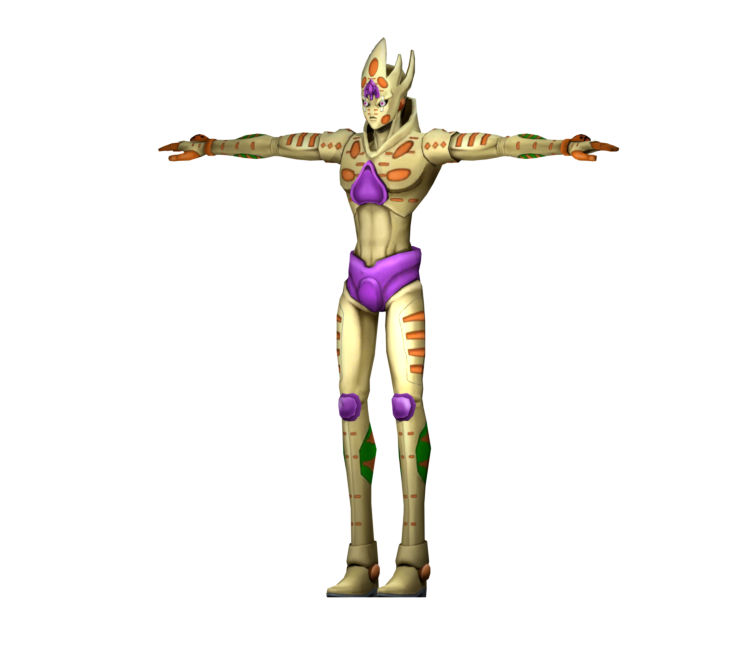

Gold Experience is a Stand with the ability to give life to inanimate objects, transforming them into living organisms.
This power allows Giorno to create plants, animals, and even heal injuries by converting objects into living tissue.
One of Gold Experience's most notable abilities is its capacity to reflect damage back to attackers by turning parts of their bodies into living creatures, effectively neutralizing their attacks.
Additionally, Gold Experience can enhance the senses of living beings it creates, granting them heightened perception and awareness.
Overall, Gold Experience is a versatile and formidable Stand that plays a crucial role in Giorno Giovanna's journey in JoJo's Bizarre Adventure: Golden Wind.

More on Giorno Giovanna the stand user Fandom Page